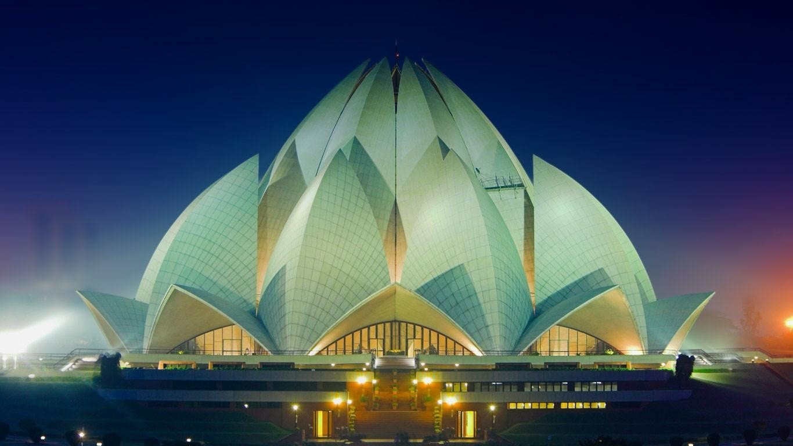
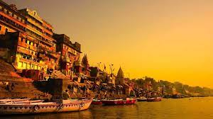
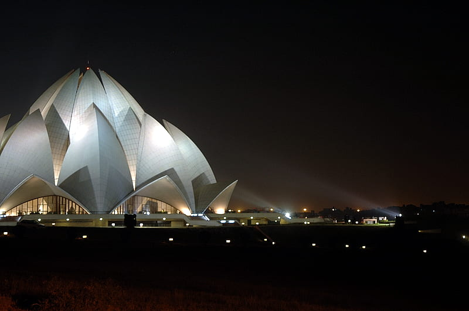
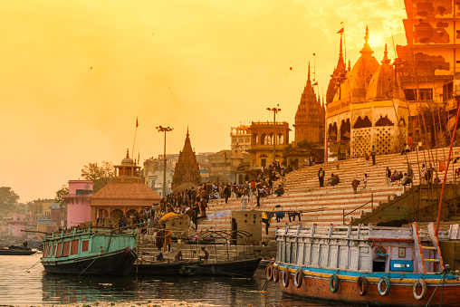

Points on Which we will Differciate:
1. Architectural Design and Features
2. Materials Used for Construction

Lotus Temple’s architectural design is characterized by BIOMIMICRY and has a distinct FLOWER LIKE SHAPE.
Its symmetrical design looks beautiful.
The building consists of 27 free-standing petals made of concrete and coated in white marble
(sourced from Greece's Penteli mountain) and includes a central prayer hall, walkways, ground with ponds,
and a greenhouse.

Kashi Vishwanath has a NAGARA STYLE OF TEMPLE ARCHITECTURE which is most prevalent in northern India.
The main temple is a quadrangle in shape and is surrounded by smaller shrines of other gods.
The temple complex consists of a series of smaller shrines, located in a small lane called the Vishwanatha Galli,
near the river.The linga of the main deity at the shrine is 60 centimetres (24 in) tall and 90 centimetres (35 in)
in circumference housed in a silver altar.

The temple's design was inspired by the lotus flower – the national flower of India. Engineers constructed the
building out of 27 'leaves'. Each leaf is a marble-clad free-standing concrete slab. There are 3 sorts of leaf making
up the temple. The temple is constructed from marble, cement and sand. The 27 petals were clad with marble from
Rajasthani Macrana, the dolomite clay is from the mines of Alwar, near Delhi, and the white silica sand is from
Jaipur.
 KaalBhairava wandered along the banks of River Ganga southwards. At a certain position, the river turned towards
North and he entered Kashi. When he dipped his left hand in the river, the head unclung from his hand and he was
liberated. This place became Kashi as told by the legend. Kashi Vishwanath’s temple is made of Gold Spire and Gold
Dome.